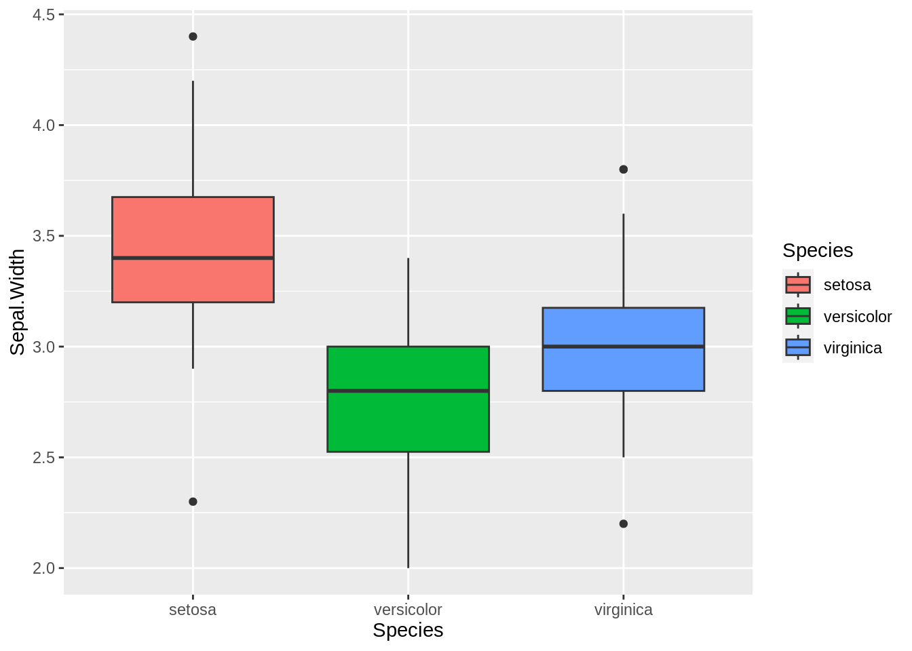

Code
summary(cars) speed dist
Min. : 4.0 Min. : 2.00
1st Qu.:12.0 1st Qu.: 26.00
Median :15.0 Median : 36.00
Mean :15.4 Mean : 42.98
3rd Qu.:19.0 3rd Qu.: 56.00
Max. :25.0 Max. :120.00 Hey! I’m the first tab!
Hey! I’m the second tab!
Hey! I’m the first tab!
Hey! I’m the second tab!
Here you can write your first paragraph. You can also add citations contained in ‘citations.bib’ file (Hu et al. 2020). See http://rmarkdown.rstudio.com.
You can embed an R code chunk like this:
summary(cars) speed dist
Min. : 4.0 Min. : 2.00
1st Qu.:12.0 1st Qu.: 26.00
Median :15.0 Median : 36.00
Mean :15.4 Mean : 42.98
3rd Qu.:19.0 3rd Qu.: 56.00
Max. :25.0 Max. :120.00 You can also embed plots, for example:
plot(pressure)
library(ggplot2)
plot(cars)
library(ggplot2)
plot(pressure)
library(ggplot2)
ggplot(iris, aes(Species, Sepal.Width, fill=Species))+geom_boxplot()
plot(pressure)
Note that the echo: false parameter was added to the code chunk to prevent printing of the R code that generated the plot.
You also can add silent code that won’t be reported in your final report (include: false)
# execute the following bash code
pwd/home/matteo/MEGA/Personale/Università/Didattica/2023/PhDToolbox/PhDToolbox2024/docs/Exercises/Reports/Quarto